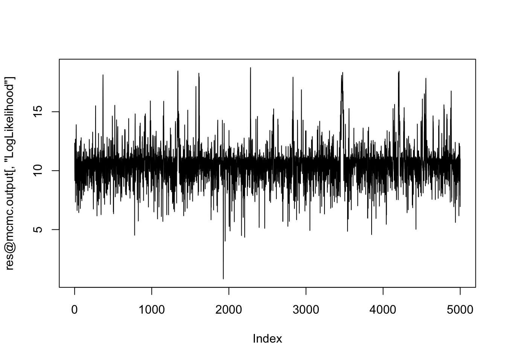
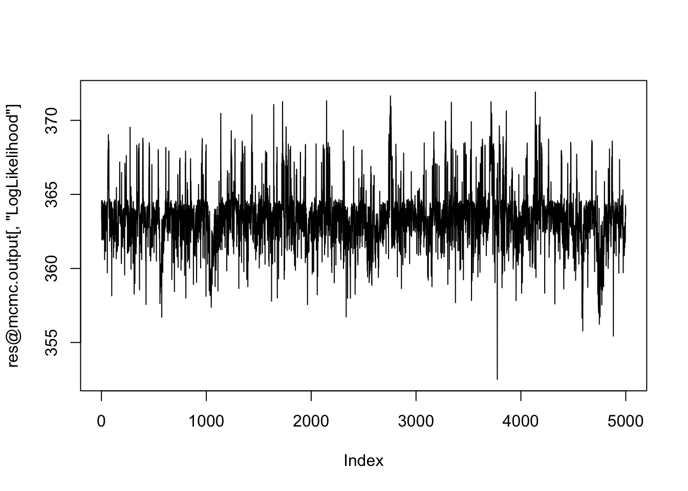
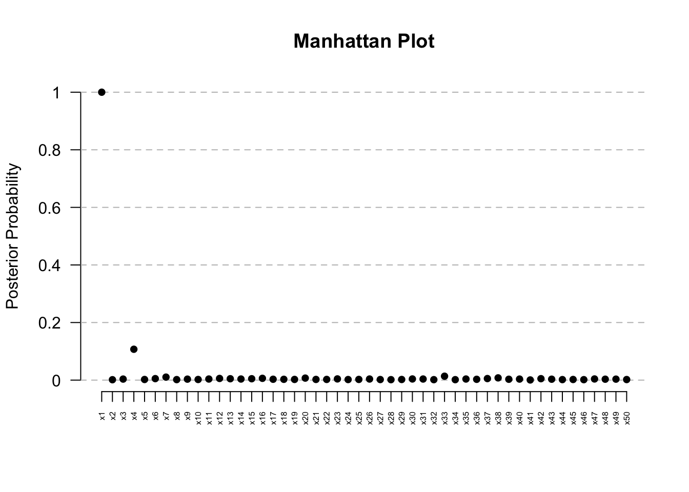
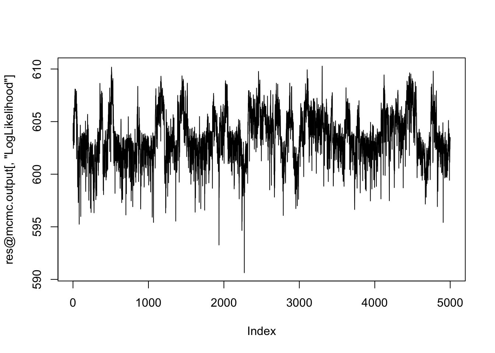
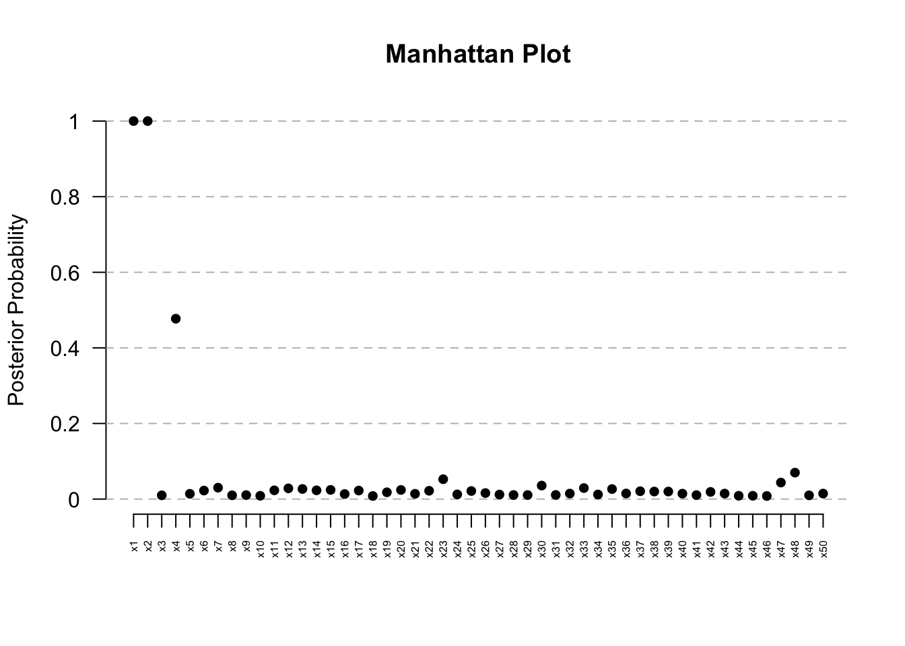

Last updated: 2024-01-18
Checks: 7 0
Knit directory: survival-susie/
This reproducible R Markdown analysis was created with workflowr (version 1.6.2). The Checks tab describes the reproducibility checks that were applied when the results were created. The Past versions tab lists the development history.
Great! Since the R Markdown file has been committed to the Git repository, you know the exact version of the code that produced these results.
Great job! The global environment was empty. Objects defined in the global environment can affect the analysis in your R Markdown file in unknown ways. For reproduciblity it’s best to always run the code in an empty environment.
The command set.seed(20230201) was run prior to running the code in the R Markdown file. Setting a seed ensures that any results that rely on randomness, e.g. subsampling or permutations, are reproducible.
Great job! Recording the operating system, R version, and package versions is critical for reproducibility.
Nice! There were no cached chunks for this analysis, so you can be confident that you successfully produced the results during this run.
Great job! Using relative paths to the files within your workflowr project makes it easier to run your code on other machines.
Great! You are using Git for version control. Tracking code development and connecting the code version to the results is critical for reproducibility.
The results in this page were generated with repository version a6faa50. See the Past versions tab to see a history of the changes made to the R Markdown and HTML files.
Note that you need to be careful to ensure that all relevant files for the analysis have been committed to Git prior to generating the results (you can use wflow_publish or wflow_git_commit). workflowr only checks the R Markdown file, but you know if there are other scripts or data files that it depends on. Below is the status of the Git repository when the results were generated:
Ignored files:
Ignored: .DS_Store
Ignored: .Rhistory
Ignored: .Rproj.user/
Ignored: data/.DS_Store
Unstaged changes:
Modified: analysis/run_ser_simple_dat.Rmd
Modified: analysis/ser_survival.Rmd
Modified: data/dsc3/susie.lbf.rds
Note that any generated files, e.g. HTML, png, CSS, etc., are not included in this status report because it is ok for generated content to have uncommitted changes.
These are the previous versions of the repository in which changes were made to the R Markdown (analysis/R2BGLiMS.Rmd) and HTML (docs/R2BGLiMS.html) files. If you’ve configured a remote Git repository (see ?wflow_git_remote), click on the hyperlinks in the table below to view the files as they were in that past version.
| File | Version | Author | Date | Message |
|---|---|---|---|---|
| Rmd | a6faa50 | yunqiyang0215 | 2024-01-18 | wflow_publish("analysis/R2BGLiMS.Rmd") |
#install_github("pjnewcombe/R2BGLiMS")
library(R2BGLiMS)# Example usage from the package
utils::data(VA, package = "MASS")
predictors <- c("treat","age","Karn","diag.time","prior")
for (v in predictors) {VA[,v] <- scale(as.numeric(VA[,v]))} # Normalise predictors
VA$stime <- VA$stime/max(VA$stime)# Recommend scaling survival times to between 0 and 1
va.results.weibull <- R2BGLiMS(
likelihood="Weibull",
data=VA,
outcome.var="status",
times.var="stime",
model.space.priors=list(list("a"=1,"b"=length(predictors),"Variables"=predictors)) # Beta-binomial(1,P) model space prior
)
plot(va.results.weibull@mcmc.output[,"LogLikelihood"], type="l") # Looks ok
ManhattanPlot(va.results.weibull) # Clear signal at Kern
va.results.weibull@posterior.summary.table
TopModels(va.results.weibull)dat = readRDS("./data/sim_dat_censoring.rds")p = 50
X = as.data.frame(dat[[1]][, c(2:(p+1))])
data = dat[[1]]
data$surT = data$surT/max(data$surT)
predictors = names(data)[2:51]
res <- R2BGLiMS(
likelihood="Weibull",
data=data,
outcome.var="status",
times.var="surT",
model.space.priors=list(list("a"=1,"b"=length(predictors),"Variables"=predictors)) # Beta-binomial(1,P) model space prior
)
plot(res@mcmc.output[,"LogLikelihood"], type="l") # Looks ok
ManhattanPlot(res) # Clear signal at Kernres@posterior.summary.table PostProb Median CrI_Lower CrI_Upper Median_Present
LogWeibullScale NA 0.1610626 -0.03859787 0.3430198 NA
alpha NA 1.3523057 1.00867924 1.6926551 NA
x1 0.0118 1.0000000 1.00000000 1.0000000 1.0280163
x2 0.0078 1.0000000 1.00000000 1.0000000 0.9221009
x3 0.0074 1.0000000 1.00000000 1.0000000 0.9831639
x4 0.0840 1.0000000 0.70869832 1.0000000 0.7688011
x5 0.0066 1.0000000 1.00000000 1.0000000 1.0326363
x6 0.0116 1.0000000 1.00000000 1.0000000 0.9933552
x7 0.0192 1.0000000 1.00000000 1.0000000 1.1448234
x8 0.0104 1.0000000 1.00000000 1.0000000 1.0330879
x9 0.0100 1.0000000 1.00000000 1.0000000 0.9736753
x10 0.0114 1.0000000 1.00000000 1.0000000 1.0852405
x11 0.0092 1.0000000 1.00000000 1.0000000 1.0806676
x12 0.0242 1.0000000 1.00000000 1.0000000 1.1506922
x13 0.0134 1.0000000 1.00000000 1.0000000 1.0682154
x14 0.0098 1.0000000 1.00000000 1.0000000 0.9849805
x15 0.0146 1.0000000 1.00000000 1.0000000 0.9276955
x16 0.0172 1.0000000 1.00000000 1.0000000 1.1486297
x17 0.0140 1.0000000 1.00000000 1.0000000 1.0607028
x18 0.0082 1.0000000 1.00000000 1.0000000 0.9921366
x19 0.0100 1.0000000 1.00000000 1.0000000 0.9743220
x20 0.0208 1.0000000 1.00000000 1.0000000 1.1152984
x21 0.0096 1.0000000 1.00000000 1.0000000 1.0210036
x22 0.0106 1.0000000 1.00000000 1.0000000 1.0605709
x23 0.0134 1.0000000 1.00000000 1.0000000 1.0608810
x24 0.0088 1.0000000 1.00000000 1.0000000 0.9917187
x25 0.0108 1.0000000 1.00000000 1.0000000 1.0164753
x26 0.0092 1.0000000 1.00000000 1.0000000 1.0444614
x27 0.0114 1.0000000 1.00000000 1.0000000 1.0136036
x28 0.0122 1.0000000 1.00000000 1.0000000 1.0140561
x29 0.0092 1.0000000 1.00000000 1.0000000 0.9919877
x30 0.0182 1.0000000 1.00000000 1.0000000 0.9014801
x31 0.0094 1.0000000 1.00000000 1.0000000 1.0388776
x32 0.0120 1.0000000 1.00000000 1.0000000 0.9961686
x33 0.0432 1.0000000 0.87828511 1.0000000 0.8586309
x34 0.0114 1.0000000 1.00000000 1.0000000 0.9909424
x35 0.0080 1.0000000 1.00000000 1.0000000 1.0398593
x36 0.0118 1.0000000 1.00000000 1.0000000 1.0762741
x37 0.0150 1.0000000 1.00000000 1.0000000 1.0672843
x38 0.0132 1.0000000 1.00000000 1.0000000 0.9108577
x39 0.0114 1.0000000 1.00000000 1.0000000 1.0116945
x40 0.0106 1.0000000 1.00000000 1.0000000 0.9707291
x41 0.0088 1.0000000 1.00000000 1.0000000 0.9746359
x42 0.0130 1.0000000 1.00000000 1.0000000 0.9497603
x43 0.0100 1.0000000 1.00000000 1.0000000 0.9740065
x44 0.0118 1.0000000 1.00000000 1.0000000 1.0182594
x45 0.0106 1.0000000 1.00000000 1.0000000 0.9746256
x46 0.0094 1.0000000 1.00000000 1.0000000 0.9869027
x47 0.0206 1.0000000 1.00000000 1.0000000 1.1222046
x48 0.0110 1.0000000 1.00000000 1.0000000 1.0255710
x49 0.0102 1.0000000 1.00000000 1.0000000 1.0056435
x50 0.0120 1.0000000 1.00000000 1.0000000 0.9623610
LogBetaPriorSd1 NA -1.4779983 -2.91948901 0.5516384 NA
LogLikelihood NA 10.6204232 7.55639267 14.3789036 NA
ModelSizePartition1 NA 0.0000000 0.00000000 4.0000000 NA
CrI_Lower_Present CrI_Upper_Present Mean BF
LogWeibullScale NA NA 1.578727e-01 NA
alpha NA NA 1.353113e+00 NA
x1 0.8475666 1.2126297 3.809361e-04 0.5970451
x2 0.8032817 1.1445170 -4.899650e-04 0.3930659
x3 0.8484618 1.1418544 -9.688818e-05 0.3727584
x4 0.5825615 0.9957249 -2.214241e-02 4.5851528
x5 0.8383900 1.2294159 1.236444e-04 0.3321925
x6 0.7955628 1.1600496 -2.877988e-04 0.5868070
x7 0.9405038 1.4783328 2.785093e-03 0.9787928
x8 0.8427635 1.2266687 2.944813e-04 0.5254648
x9 0.8009526 1.1512854 -2.740550e-04 0.5050505
x10 0.9682344 1.2199136 9.075419e-04 0.5765729
x11 0.9447958 1.3497535 7.792749e-04 0.4642713
x12 0.9369473 1.5944747 3.784872e-03 1.2400082
x13 0.9127219 1.3130909 1.099308e-03 0.6790999
x14 0.7042257 1.2210523 -4.809914e-04 0.4948495
x15 0.7135134 1.0508672 -1.201250e-03 0.7408159
x16 0.9459429 1.4301591 2.542534e-03 0.8750509
x17 0.9154013 1.4643507 1.197350e-03 0.7099391
x18 0.8054890 1.1984117 -1.326223e-04 0.4133898
x19 0.8233133 1.1110063 -3.467911e-04 0.5050505
x20 0.9627663 1.3278692 2.236673e-03 1.0620915
x21 0.8485133 1.3022423 1.624975e-04 0.4846527
x22 0.8358498 1.4164067 5.967681e-04 0.5356782
x23 0.8944307 1.3885824 9.981557e-04 0.6790999
x24 0.8049742 1.1564910 -1.022263e-04 0.4439064
x25 0.8381707 1.2466960 3.021474e-04 0.5458957
x26 0.8920549 1.2937196 4.078450e-04 0.4642713
x27 0.9021422 1.1249300 1.153156e-04 0.5765729
x28 0.8981956 1.1697784 2.509773e-04 0.6175339
x29 0.8376906 1.2175775 -7.776453e-05 0.4642713
x30 0.6193354 1.1047572 -2.276511e-03 0.9268690
x31 0.9110087 1.3575260 4.842910e-04 0.4744599
x32 0.8269075 1.2229313 -6.269294e-05 0.6072874
x33 0.6544006 1.0110703 -7.062730e-03 2.2575251
x34 0.8057230 1.1401949 -1.471844e-04 0.5765729
x35 0.9285056 1.3543277 4.324173e-04 0.4032258
x36 0.9425055 1.3651566 1.010598e-03 0.5970451
x37 0.9336254 1.2796893 1.114188e-03 0.7614213
x38 0.7160542 1.0637227 -1.346759e-03 0.6688285
x39 0.8952531 1.2533660 4.291660e-04 0.5765729
x40 0.8097046 1.2822688 -1.438880e-04 0.5356782
x41 0.8275296 1.0848453 -3.318440e-04 0.4439064
x42 0.7545665 1.0727358 -1.002544e-03 0.6585613
x43 0.8187101 1.1698142 -1.789108e-04 0.5050505
x44 0.8472266 1.1706217 2.532433e-04 0.5970451
x45 0.7480238 1.1010778 -4.875874e-04 0.5356782
x46 0.8563690 1.2750616 -6.100973e-05 0.4744599
x47 0.9145595 1.6130331 2.664081e-03 1.0516643
x48 0.9175278 1.2198622 3.789124e-04 0.5561173
x49 0.9224239 1.1715225 1.221386e-04 0.5152556
x50 0.7824753 1.1300255 -4.518819e-04 0.6072874
LogBetaPriorSd1 NA NA -1.366380e+00 NA
LogLikelihood NA NA 1.058359e+01 NA
ModelSizePartition1 NA NA NA NATopModels(res) x4 x7 x10 x12 x14 x15 x16 x17 x19 x20 x23 x28 x30 x33 x37 x38 x42 x47
[1,] 0 0 0 0 0 0 0 0 0 0 0 0 0 0 0 0 0 0
[2,] 1 0 0 0 0 0 0 0 0 0 0 0 0 0 0 0 0 0
[3,] 0 0 0 0 0 0 0 0 0 0 0 0 0 1 0 0 0 0
[4,] 0 0 0 1 0 0 0 0 0 0 0 0 0 0 0 0 0 0
[5,] 0 0 0 0 0 0 0 0 0 1 0 0 0 0 0 0 0 0
[6,] 1 0 0 0 0 0 0 0 0 0 0 0 0 1 0 0 0 0
[7,] 0 0 0 0 0 1 0 0 0 0 0 0 0 0 0 0 0 0
[8,] 0 0 0 0 0 0 1 0 0 0 0 0 0 0 0 0 0 0
[9,] 0 1 0 0 0 0 0 0 0 0 0 0 0 0 0 0 0 0
[10,] 0 0 0 0 0 0 0 0 0 0 0 0 0 0 0 0 0 1
[11,] 0 0 0 0 0 0 0 0 0 0 0 0 1 0 0 0 0 0
[12,] 0 0 1 0 0 0 0 0 0 0 0 0 0 0 0 0 0 0
[13,] 0 0 0 0 0 0 0 0 0 0 0 0 0 0 1 0 0 0
[14,] 0 0 0 0 0 0 0 0 0 0 1 0 0 0 0 0 0 0
[15,] 0 0 0 0 0 0 0 0 0 0 0 0 0 0 0 1 0 0
[16,] 0 0 0 0 0 0 0 0 1 0 0 0 0 0 0 0 0 0
[17,] 0 0 0 0 0 0 0 1 0 0 0 0 0 0 0 0 0 0
[18,] 0 0 0 0 0 0 0 0 0 0 0 0 0 0 0 0 1 0
[19,] 0 0 0 0 0 0 0 0 0 0 0 1 0 0 0 0 0 0
[20,] 0 0 0 0 1 0 0 0 0 0 0 0 0 0 0 0 0 0
Post Prob
[1,] 0.6032
[2,] 0.0364
[3,] 0.0118
[4,] 0.0086
[5,] 0.0082
[6,] 0.0070
[7,] 0.0068
[8,] 0.0064
[9,] 0.0064
[10,] 0.0058
[11,] 0.0058
[12,] 0.0050
[13,] 0.0048
[14,] 0.0048
[15,] 0.0046
[16,] 0.0046
[17,] 0.0046
[18,] 0.0044
[19,] 0.0044
[20,] 0.0042p = 50
X = as.data.frame(dat[[3]][, c(2:(p+1))])
data = dat[[3]]
data$surT = data$surT/max(data$surT)
predictors = names(data)[2:51]
res <- R2BGLiMS(
likelihood="Weibull",
data=data,
outcome.var="status",
times.var="surT",
model.space.priors=list(list("a"=1,"b"=length(predictors),"Variables"=predictors)) # Beta-binomial(1,P) model space prior
)
plot(res@mcmc.output[,"LogLikelihood"], type="l") # Looks ok
ManhattanPlot(res) # Clear signal at Kern
res@posterior.summary.table PostProb Median CrI_Lower CrI_Upper
LogWeibullScale NA 0.1223675 -0.07551654 0.3124062
alpha NA 7.9503379 6.46708601 9.5869434
x1 1.0000 0.0374255 0.01839469 0.0704018
x2 0.0014 1.0000000 1.00000000 1.0000000
x3 0.0036 1.0000000 1.00000000 1.0000000
x4 0.1072 1.0000000 0.61808831 1.0000000
x5 0.0022 1.0000000 1.00000000 1.0000000
x6 0.0052 1.0000000 1.00000000 1.0000000
x7 0.0104 1.0000000 1.00000000 1.0000000
x8 0.0018 1.0000000 1.00000000 1.0000000
x9 0.0034 1.0000000 1.00000000 1.0000000
x10 0.0022 1.0000000 1.00000000 1.0000000
x11 0.0038 1.0000000 1.00000000 1.0000000
x12 0.0058 1.0000000 1.00000000 1.0000000
x13 0.0048 1.0000000 1.00000000 1.0000000
x14 0.0038 1.0000000 1.00000000 1.0000000
x15 0.0048 1.0000000 1.00000000 1.0000000
x16 0.0062 1.0000000 1.00000000 1.0000000
x17 0.0030 1.0000000 1.00000000 1.0000000
x18 0.0028 1.0000000 1.00000000 1.0000000
x19 0.0024 1.0000000 1.00000000 1.0000000
x20 0.0070 1.0000000 1.00000000 1.0000000
x21 0.0024 1.0000000 1.00000000 1.0000000
x22 0.0024 1.0000000 1.00000000 1.0000000
x23 0.0042 1.0000000 1.00000000 1.0000000
x24 0.0020 1.0000000 1.00000000 1.0000000
x25 0.0024 1.0000000 1.00000000 1.0000000
x26 0.0038 1.0000000 1.00000000 1.0000000
x27 0.0020 1.0000000 1.00000000 1.0000000
x28 0.0016 1.0000000 1.00000000 1.0000000
x29 0.0022 1.0000000 1.00000000 1.0000000
x30 0.0040 1.0000000 1.00000000 1.0000000
x31 0.0038 1.0000000 1.00000000 1.0000000
x32 0.0016 1.0000000 1.00000000 1.0000000
x33 0.0136 1.0000000 1.00000000 1.0000000
x34 0.0016 1.0000000 1.00000000 1.0000000
x35 0.0038 1.0000000 1.00000000 1.0000000
x36 0.0028 1.0000000 1.00000000 1.0000000
x37 0.0054 1.0000000 1.00000000 1.0000000
x38 0.0078 1.0000000 1.00000000 1.0000000
x39 0.0030 1.0000000 1.00000000 1.0000000
x40 0.0036 1.0000000 1.00000000 1.0000000
x41 0.0006 1.0000000 1.00000000 1.0000000
x42 0.0050 1.0000000 1.00000000 1.0000000
x43 0.0032 1.0000000 1.00000000 1.0000000
x44 0.0018 1.0000000 1.00000000 1.0000000
x45 0.0022 1.0000000 1.00000000 1.0000000
x46 0.0016 1.0000000 1.00000000 1.0000000
x47 0.0040 1.0000000 1.00000000 1.0000000
x48 0.0032 1.0000000 1.00000000 1.0000000
x49 0.0034 1.0000000 1.00000000 1.0000000
x50 0.0020 1.0000000 1.00000000 1.0000000
LogBetaPriorSd1 NA 0.5285658 0.08858108 0.6865978
LogLikelihood NA 363.5239132 359.70265021 368.1393546
ModelSizePartition1 NA 1.0000000 1.00000000 3.0000000
Median_Present CrI_Lower_Present CrI_Upper_Present
LogWeibullScale NA NA NA
alpha NA NA NA
x1 0.0374255 0.01839469 0.0704018
x2 0.9272424 0.78623833 1.1165126
x3 1.0677638 0.88433667 1.2918149
x4 0.6841762 0.52776544 0.8962652
x5 0.9715232 0.84168330 1.3205454
x6 0.8566713 0.71450406 1.0920370
x7 1.3324478 0.99193650 1.6742084
x8 1.0422652 0.89383870 1.5230937
x9 0.9118150 0.76275757 1.3164531
x10 1.1559999 1.00027377 1.3677103
x11 1.0855865 0.94800417 1.4719503
x12 1.2320825 0.95541425 1.4431722
x13 1.0923703 0.96509988 1.2504330
x14 0.8560183 0.65368783 1.2259008
x15 0.8912499 0.74907560 1.0900709
x16 1.1098850 0.85539072 1.4605907
x17 1.0027726 0.82722304 1.1837541
x18 0.9214970 0.78261688 1.1249312
x19 0.8800532 0.66329888 1.1717633
x20 1.1689193 1.01235915 1.5587998
x21 1.0195630 0.76132518 1.5147159
x22 1.0738352 0.89455848 1.3762109
x23 1.1324272 0.91178935 1.4280215
x24 0.9913735 0.87051911 1.1736145
x25 1.1568959 0.92364071 1.5983792
x26 1.1479929 0.84149425 1.3614192
x27 1.0555530 0.85123041 1.2629539
x28 0.9883113 0.85685721 1.2712940
x29 0.9219677 0.73644069 1.0448738
x30 0.7816954 0.61353038 0.9750835
x31 1.1205230 0.95006018 1.3836365
x32 0.9182460 0.83384923 1.0053673
x33 0.7817540 0.62506962 0.9667545
x34 0.9942659 0.84845652 1.1392813
x35 1.2400991 0.85898501 1.6126056
x36 1.2694009 1.08606091 1.4497891
x37 1.1924702 0.95249359 1.4943358
x38 0.7879560 0.62346083 1.0868564
x39 1.0485462 0.91107006 1.2452154
x40 0.8403576 0.53212472 1.1241256
x41 0.8319586 0.63838243 0.8436266
x42 0.8380498 0.64597405 1.1476712
x43 0.9789061 0.80600844 1.1904867
x44 1.0769611 0.95392820 1.3356058
x45 0.9125721 0.67018636 1.0126951
x46 0.9428667 0.82615494 1.1337341
x47 1.2558435 1.00496691 1.4816810
x48 1.1559348 0.80426815 1.4100763
x49 0.9836735 0.82735410 1.2581369
x50 0.8897466 0.72718841 1.0619317
LogBetaPriorSd1 NA NA NA
LogLikelihood NA NA NA
ModelSizePartition1 NA NA NA
Mean BF
LogWeibullScale 1.206658e-01 NA
alpha 7.972343e+00 NA
x1 -3.292713e+00 Inf
x2 -1.192460e-04 0.07009814
x3 2.134311e-04 0.18065034
x4 -4.144231e-02 6.00358423
x5 4.118229e-05 0.11024253
x6 -8.159470e-04 0.26135907
x7 2.766006e-03 0.52546483
x8 2.144652e-04 0.09016229
x9 -1.689131e-04 0.17057997
x10 2.868503e-04 0.11024253
x11 4.808861e-04 0.19072475
x12 1.020690e-03 0.29169181
x13 4.231728e-04 0.24115756
x14 -4.781145e-04 0.19072475
x15 -5.588712e-04 0.24115756
x16 6.735169e-04 0.31193399
x17 8.373065e-05 0.15045135
x18 -1.984849e-04 0.14039310
x19 -3.111654e-04 0.12028869
x20 1.406681e-03 0.35246727
x21 9.467572e-05 0.12028869
x22 1.927679e-04 0.12028869
x23 5.849140e-04 0.21088572
x24 -2.336713e-05 0.10020040
x25 3.989767e-04 0.12028869
x26 3.223315e-04 0.19072475
x27 9.617618e-05 0.10020040
x28 2.691383e-05 0.08012821
x29 -1.974658e-04 0.11024253
x30 -9.489710e-04 0.20080321
x31 4.813005e-04 0.19072475
x32 -1.403247e-04 0.08012821
x33 -3.353156e-03 0.68937551
x34 -4.118284e-05 0.08012821
x35 7.405082e-04 0.19072475
x36 6.711163e-04 0.14039310
x37 1.032874e-03 0.27146592
x38 -1.632646e-03 0.39306591
x39 1.624339e-04 0.15045135
x40 -7.556267e-04 0.18065034
x41 -1.632084e-04 0.03001801
x42 -7.998833e-04 0.25125628
x43 -8.634115e-05 0.16051364
x44 1.921833e-04 0.09016229
x45 -3.035134e-04 0.11024253
x46 -7.781157e-05 0.08012821
x47 8.246321e-04 0.20080321
x48 3.137386e-04 0.16051364
x49 4.413556e-05 0.17057997
x50 -2.385300e-04 0.10020040
LogBetaPriorSd1 4.904015e-01 NA
LogLikelihood 3.634793e+02 NA
ModelSizePartition1 NA NATopModels(res) x1 x4 x6 x7 x12 x13 x14 x15 x16 x20 x26 x30 x33 x35 x37 x38 x40 x42 x47
[1,] 1 0 0 0 0 0 0 0 0 0 0 0 0 0 0 0 0 0 0
[2,] 1 1 0 0 0 0 0 0 0 0 0 0 0 0 0 0 0 0 0
[3,] 1 0 0 0 0 0 0 0 0 0 0 0 1 0 0 0 0 0 0
[4,] 1 0 0 1 0 0 0 0 0 0 0 0 0 0 0 0 0 0 0
[5,] 1 0 0 0 0 0 0 0 0 1 0 0 0 0 0 0 0 0 0
[6,] 1 0 0 0 0 0 0 0 0 0 0 0 0 0 0 1 0 0 0
[7,] 1 0 0 0 1 0 0 0 0 0 0 0 0 0 0 0 0 0 0
[8,] 1 0 0 0 0 0 0 0 1 0 0 0 0 0 0 0 0 0 0
[9,] 1 0 0 0 0 0 0 1 0 0 0 0 0 0 0 0 0 0 0
[10,] 1 0 0 0 0 1 0 0 0 0 0 0 0 0 0 0 0 0 0
[11,] 1 0 0 0 0 0 0 0 0 0 0 0 0 0 1 0 0 0 0
[12,] 1 0 1 0 0 0 0 0 0 0 0 0 0 0 0 0 0 0 0
[13,] 1 1 0 0 0 0 0 0 0 0 0 0 1 0 0 0 0 0 0
[14,] 1 0 0 0 0 0 0 0 0 0 0 1 0 0 0 0 0 0 0
[15,] 1 0 0 0 0 0 0 0 0 0 1 0 0 0 0 0 0 0 0
[16,] 1 0 0 0 0 0 0 0 0 0 0 0 0 0 0 0 0 1 0
[17,] 1 0 0 0 0 0 1 0 0 0 0 0 0 0 0 0 0 0 0
[18,] 1 0 0 0 0 0 0 0 0 0 0 0 0 0 0 0 0 0 1
[19,] 1 0 0 0 0 0 0 0 0 0 0 0 0 0 0 0 1 0 0
[20,] 1 0 0 0 0 0 0 0 0 0 0 0 0 1 0 0 0 0 0
Post Prob
[1,] 0.7658
[2,] 0.0784
[3,] 0.0064
[4,] 0.0060
[5,] 0.0054
[6,] 0.0044
[7,] 0.0040
[8,] 0.0038
[9,] 0.0038
[10,] 0.0036
[11,] 0.0034
[12,] 0.0034
[13,] 0.0034
[14,] 0.0032
[15,] 0.0032
[16,] 0.0030
[17,] 0.0030
[18,] 0.0028
[19,] 0.0028
[20,] 0.0028p = 50
X = as.data.frame(dat[[5]][, c(2:(p+1))])
data = dat[[5]]
data$surT = data$surT/max(data$surT)
predictors = names(data)[2:51]
res <- R2BGLiMS(
likelihood="Weibull",
data=data,
outcome.var="status",
times.var="surT",
model.space.priors=list(list("a"=1,"b"=length(predictors),"Variables"=predictors)) # Beta-binomial(1,P) model space prior
)
plot(res@mcmc.output[,"LogLikelihood"], type="l") # Looks ok
ManhattanPlot(res) # Clear signal at Kern
res@posterior.summary.table PostProb Median CrI_Lower CrI_Upper
LogWeibullScale NA 0.12434979 -0.06097042 0.3103664
alpha NA 12.44247878 10.33900482 14.9628292
x1 1.0000 0.05663323 0.02356442 0.1426861
x2 1.0000 0.16490705 0.08153712 0.3390956
x3 0.0100 1.00000000 1.00000000 1.0000000
x4 0.4772 1.00000000 0.18773634 1.0000000
x5 0.0140 1.00000000 1.00000000 1.0000000
x6 0.0226 1.00000000 1.00000000 1.0000000
x7 0.0302 1.00000000 1.00000000 1.1656648
x8 0.0100 1.00000000 1.00000000 1.0000000
x9 0.0106 1.00000000 1.00000000 1.0000000
x10 0.0088 1.00000000 1.00000000 1.0000000
x11 0.0232 1.00000000 1.00000000 1.0000000
x12 0.0284 1.00000000 1.00000000 1.1599522
x13 0.0268 1.00000000 1.00000000 1.0000000
x14 0.0232 1.00000000 1.00000000 1.0000000
x15 0.0244 1.00000000 1.00000000 1.0000000
x16 0.0134 1.00000000 1.00000000 1.0000000
x17 0.0226 1.00000000 1.00000000 1.0000000
x18 0.0082 1.00000000 1.00000000 1.0000000
x19 0.0180 1.00000000 1.00000000 1.0000000
x20 0.0242 1.00000000 1.00000000 1.0000000
x21 0.0140 1.00000000 1.00000000 1.0000000
x22 0.0220 1.00000000 1.00000000 1.0000000
x23 0.0526 1.00000000 1.00000000 2.0109118
x24 0.0124 1.00000000 1.00000000 1.0000000
x25 0.0214 1.00000000 1.00000000 1.0000000
x26 0.0160 1.00000000 1.00000000 1.0000000
x27 0.0120 1.00000000 1.00000000 1.0000000
x28 0.0108 1.00000000 1.00000000 1.0000000
x29 0.0108 1.00000000 1.00000000 1.0000000
x30 0.0358 1.00000000 0.72695946 1.0000000
x31 0.0110 1.00000000 1.00000000 1.0000000
x32 0.0146 1.00000000 1.00000000 1.0000000
x33 0.0292 1.00000000 0.93482010 1.0000000
x34 0.0122 1.00000000 1.00000000 1.0000000
x35 0.0266 1.00000000 1.00000000 1.0000000
x36 0.0148 1.00000000 1.00000000 1.0000000
x37 0.0208 1.00000000 1.00000000 1.0000000
x38 0.0200 1.00000000 1.00000000 1.0000000
x39 0.0200 1.00000000 1.00000000 1.0000000
x40 0.0144 1.00000000 1.00000000 1.0000000
x41 0.0106 1.00000000 1.00000000 1.0000000
x42 0.0190 1.00000000 1.00000000 1.0000000
x43 0.0146 1.00000000 1.00000000 1.0000000
x44 0.0088 1.00000000 1.00000000 1.0000000
x45 0.0088 1.00000000 1.00000000 1.0000000
x46 0.0082 1.00000000 1.00000000 1.0000000
x47 0.0438 1.00000000 1.00000000 1.7460919
x48 0.0700 1.00000000 1.00000000 2.3849138
x49 0.0100 1.00000000 1.00000000 1.0000000
x50 0.0146 1.00000000 1.00000000 1.0000000
LogBetaPriorSd1 NA 0.42047617 -0.11235499 0.6818720
LogLikelihood NA 603.38420186 598.93870499 608.1143559
ModelSizePartition1 NA 3.00000000 2.00000000 7.0000000
Median_Present CrI_Lower_Present CrI_Upper_Present
LogWeibullScale NA NA NA
alpha NA NA NA
x1 0.05663323 0.02356442 0.1426861
x2 0.16490705 0.08153712 0.3390956
x3 1.21554684 0.72446731 2.5078529
x4 0.33567133 0.16175550 0.6821018
x5 1.01251277 0.56937345 2.3779381
x6 0.56487235 0.33715905 1.2625485
x7 1.64297925 0.82663370 3.5679448
x8 1.23646422 0.62083870 2.3144142
x9 1.07231874 0.56675182 1.7072254
x10 1.14205317 0.66702054 1.8394316
x11 1.48142164 0.75442248 3.2185401
x12 1.73120536 0.89621598 3.0476451
x13 1.70090415 0.74837754 2.8776176
x14 0.63695124 0.37083720 1.4910602
x15 0.62846432 0.39112488 1.2229894
x16 1.30232002 0.72463803 1.7899335
x17 1.57035105 0.67932014 2.5021717
x18 1.06276882 0.64000177 1.7044013
x19 1.32166219 0.69273879 2.4230723
x20 1.65116034 0.83181209 3.2760069
x21 0.99342511 0.60230626 1.7080556
x22 1.50907487 0.77937598 3.7334611
x23 1.95281412 0.84251810 3.6992277
x24 1.20266466 0.37143174 2.0911285
x25 1.21436056 0.47499303 2.2755686
x26 1.26520808 0.56854317 2.4367400
x27 1.13914180 0.64851716 2.6619393
x28 0.99278488 0.52174859 2.2671982
x29 0.95822200 0.67810090 1.7435801
x30 0.55954153 0.29542197 1.6879989
x31 1.15176162 0.52015474 2.0209403
x32 0.79947745 0.49141677 1.8369226
x33 0.63886748 0.38171764 1.1160301
x34 0.94318679 0.44793176 1.8091982
x35 1.47118500 0.52020764 2.5301848
x36 1.23949059 0.78385685 1.7218493
x37 1.45495565 0.85097572 2.3420003
x38 0.75292822 0.41909213 1.5961639
x39 1.41804303 0.59646962 2.2299565
x40 1.02768680 0.47572376 2.0229336
x41 0.96564979 0.49223690 1.4247835
x42 0.67870787 0.42005331 1.4768198
x43 0.87489118 0.50836627 1.6994392
x44 1.08116361 0.69554723 1.7452075
x45 0.99306125 0.64065140 1.9280665
x46 0.94436256 0.49876367 1.8014321
x47 1.88712957 0.91725392 4.0281934
x48 2.17080866 0.50669785 4.4335910
x49 1.00378812 0.64071495 1.3606883
x50 1.03116590 0.47946737 2.4151155
LogBetaPriorSd1 NA NA NA
LogLikelihood NA NA NA
ModelSizePartition1 NA NA NA
Mean BF
LogWeibullScale 1.260049e-01 NA
alpha 1.251155e+01 NA
x1 -2.852635e+00 Inf
x2 -1.801620e+00 Inf
x3 2.399891e-03 0.5050505
x4 -5.193851e-01 45.6388676
x5 8.319319e-04 0.7099391
x6 -1.146271e-02 1.1561285
x7 1.467143e-02 1.5570221
x8 2.220857e-03 0.5050505
x9 6.344822e-04 0.5356782
x10 8.947447e-04 0.4439064
x11 1.039848e-02 1.1875512
x12 1.433753e-02 1.4615068
x13 1.285076e-02 1.3769009
x14 -8.660934e-03 1.1875512
x15 -1.033574e-02 1.2505125
x16 3.135913e-03 0.6790999
x17 8.374250e-03 1.1561285
x18 1.456091e-04 0.4133898
x19 4.508608e-03 0.9164969
x20 1.040970e-02 1.2400082
x21 1.913303e-04 0.7099391
x22 1.015166e-02 1.1247444
x23 3.319507e-02 2.7760186
x24 4.687905e-05 0.6277845
x25 3.128773e-03 1.0933987
x26 2.812314e-03 0.8130081
x27 1.960703e-03 0.6072874
x28 5.459922e-04 0.5458957
x29 2.286552e-04 0.5458957
x30 -1.856649e-02 1.8564613
x31 1.112680e-03 0.5561173
x32 -2.771315e-03 0.7408159
x33 -1.275792e-02 1.5039143
x34 -7.341034e-05 0.6175339
x35 8.328637e-03 1.3663448
x36 2.977670e-03 0.7511165
x37 7.815794e-03 1.0620915
x38 -5.290567e-03 1.0204082
x39 6.460880e-03 1.0204082
x40 6.301960e-04 0.7305195
x41 -8.327899e-04 0.5356782
x42 -6.200152e-03 0.9683996
x43 -1.380901e-03 0.7408159
x44 9.605785e-04 0.4439064
x45 3.595678e-04 0.4439064
x46 -4.183743e-04 0.4133898
x47 2.752617e-02 2.2903158
x48 4.479775e-02 3.7634409
x49 3.151136e-05 0.5050505
x50 1.378629e-03 0.7408159
LogBetaPriorSd1 3.868622e-01 NA
LogLikelihood 6.035343e+02 NA
ModelSizePartition1 NA NATopModels(res) x1 x2 x4 x7 x11 x12 x13 x15 x20 x22 x23 x30 x33 x35 x42 x47 x48 Post Prob
[1,] 1 1 0 0 0 0 0 0 0 0 0 0 0 0 0 0 0 0.3036
[2,] 1 1 1 0 0 0 0 0 0 0 0 0 0 0 0 0 0 0.1658
[3,] 1 1 1 0 0 0 0 0 0 0 1 0 0 0 0 0 0 0.0208
[4,] 1 1 1 0 0 0 0 0 0 0 0 0 0 0 0 1 0 0.0176
[5,] 1 1 1 0 0 0 0 0 0 0 0 0 0 0 0 0 1 0.0150
[6,] 1 1 0 0 0 0 0 0 0 0 0 1 0 0 0 0 0 0.0108
[7,] 1 1 0 0 0 1 0 0 0 0 0 0 0 0 0 0 0 0.0102
[8,] 1 1 1 0 1 0 0 0 0 0 0 0 0 0 0 0 0 0.0072
[9,] 1 1 0 0 0 0 0 0 0 1 0 0 0 0 0 0 0 0.0068
[10,] 1 1 1 1 0 0 0 0 0 0 0 0 0 0 0 0 0 0.0066
[11,] 1 1 0 0 0 0 0 1 0 0 0 0 0 0 0 0 0 0.0058
[12,] 1 1 0 1 0 0 0 0 0 0 0 0 0 0 0 0 0 0.0058
[13,] 1 1 0 0 0 0 0 0 0 0 1 0 0 0 0 0 0 0.0056
[14,] 1 1 0 0 0 0 0 0 0 0 0 0 1 0 0 0 0 0.0054
[15,] 1 1 1 0 0 0 0 0 0 0 0 0 1 0 0 0 0 0.0046
[16,] 1 1 1 0 0 1 0 0 0 0 0 0 0 0 0 0 0 0.0046
[17,] 1 1 0 0 0 0 0 0 0 0 0 0 0 0 1 0 0 0.0044
[18,] 1 1 1 0 0 0 0 0 1 0 0 0 0 0 0 0 0 0.0042
[19,] 1 1 1 0 0 0 1 0 0 0 0 0 0 0 0 0 0 0.0042
[20,] 1 1 1 0 0 0 0 0 0 0 0 0 0 1 0 0 0 0.0040
sessionInfo()R version 4.1.1 (2021-08-10)
Platform: x86_64-apple-darwin20.6.0 (64-bit)
Running under: macOS Monterey 12.0.1
Matrix products: default
BLAS: /usr/local/Cellar/openblas/0.3.18/lib/libopenblasp-r0.3.18.dylib
LAPACK: /usr/local/Cellar/r/4.1.1_1/lib/R/lib/libRlapack.dylib
locale:
[1] en_US.UTF-8/en_US.UTF-8/en_US.UTF-8/C/en_US.UTF-8/en_US.UTF-8
attached base packages:
[1] stats graphics grDevices utils datasets methods base
other attached packages:
[1] survival_3.2-11 R2BGLiMS_0.1-07-02-2020 workflowr_1.6.2
loaded via a namespace (and not attached):
[1] Rcpp_1.0.8.3 highr_0.9 pillar_1.6.4 compiler_4.1.1
[5] bslib_0.4.1 later_1.3.0 jquerylib_0.1.4 git2r_0.28.0
[9] tools_4.1.1 digest_0.6.28 lattice_0.20-44 jsonlite_1.7.2
[13] evaluate_0.14 lifecycle_1.0.3 tibble_3.1.5 pkgconfig_2.0.3
[17] rlang_1.1.1 Matrix_1.5-3 cli_3.6.1 rstudioapi_0.13
[21] yaml_2.2.1 xfun_0.27 fastmap_1.1.0 stringr_1.4.0
[25] knitr_1.36 fs_1.5.0 vctrs_0.6.3 sass_0.4.4
[29] grid_4.1.1 rprojroot_2.0.2 glue_1.4.2 R6_2.5.1
[33] fansi_0.5.0 rmarkdown_2.11 magrittr_2.0.1 whisker_0.4
[37] splines_4.1.1 promises_1.2.0.1 ellipsis_0.3.2 htmltools_0.5.5
[41] httpuv_1.6.3 utf8_1.2.2 stringi_1.7.5 cachem_1.0.6
[45] crayon_1.4.1